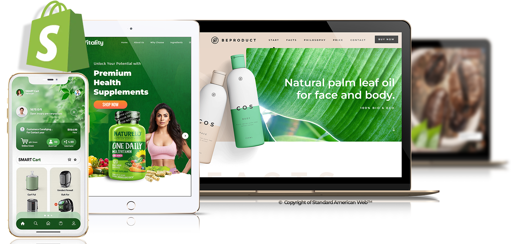

Websites engineered for growth
Built to earn the next customer.
Business websites, MicroSites, WordPress development, Shopify stores, and strategic redesigns—built around one outcome: making it easier for the right visitor to choose you.

One focused partner.Strategy, design, development, launch, and growth support.
Choose the right build
One goal. Five smart ways to get there.
You do not need the biggest website. You need the right website for your offer, buyer, timeline, and growth plan.
01 / FOUNDATION
Business Website
A polished, conversion-ready presence built to explain, prove, and sell your value.
Explore Business Websites → 02 / FOCUSED OFFERMicroSite
A lean, fast, campaign-ready website designed around one audience and one clear action.
Start a MicroSite → 03 / FLEXIBILITYWordPress Development
Custom, editable, and ready to grow with your content and organization.
Explore WordPress → 04 / COMMERCEShopify Development
A clear shopping experience that removes friction from product discovery to checkout.
Explore Shopify → 05 / TRANSFORMATIONWebsite Redesign
Keep what works, repair what does not, and relaunch with a sharper conversion path.
Plan My Redesign →The website is the front door
It should do more than look open.
We design the journey from first impression to next step—so your website works like a capable front desk, sales guide, and storefront.
Selected website experiences
Designed for the business—not the template.



A clear path to launch
Less guesswork. More forward motion.
Discover
We identify the audience, offer, objections, goals, and right website format.
Structure
We map the content and conversion journey before visual design begins.
Design + Build
Your responsive experience comes together with performance and usability in mind.
Launch + Grow
We test, deploy, and connect the next layer of visibility or automation when needed.
More than website development
Need more behind the front door?
Website development leads this page. Our wider growth ecosystem stays one click away for businesses that need a connected system.
AI EmployeesAnswer, guide, qualify, and follow up
AI Business AutomationCRM, reminders, and connected workflows
SEO ServicesBuild a stronger path from search to action
SocialBizConsistent social marketing and management
Talking WebsitesGuide visitors before they leave
Website Insurance & ContinuityDocument access before it becomes a crisis
SoLoMoSocial, local, and mobile visibility
Remote StaffingFocused technical help by the hour